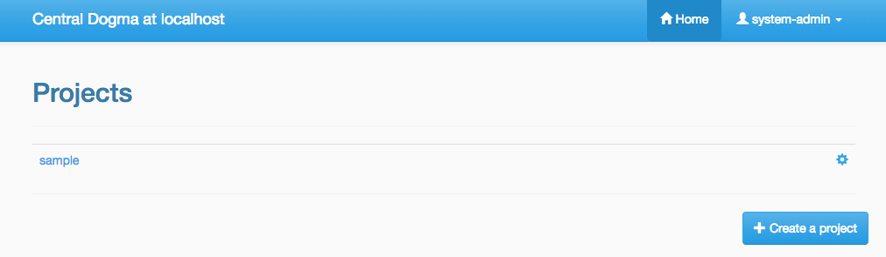
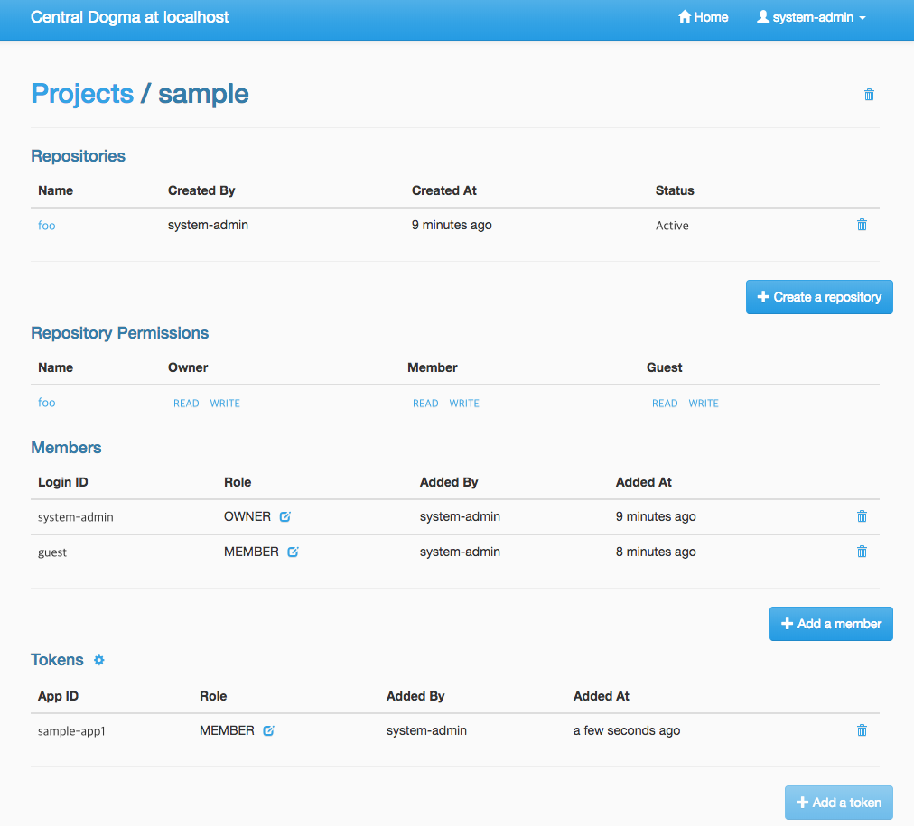
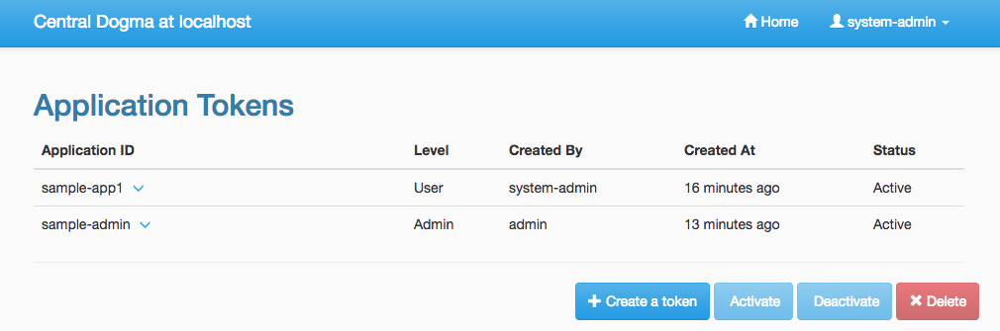

Authentication and Access Control¶
Central Dogma provides the features for authentication and access control.
Authentication¶
For authentication, Apache Shiro is used as its authentication layer and conf/shiro.ini file is used as its security configuration. Please follow the steps below to turn on the security system of Central Dogma.
First, enable the security system by configuring conf/dogma.json. Specify login IDs of the administrators there, too:
{
...
"securityEnabled": true,
"administrators": [
"system-admin", "dogma-admin"
]
...
}Next, configure conf/shiro.ini based on your authentication system. A local database system of Apache Shiro is used here to show you a simple example:
[users]
system-admin = system-admin-secret
dogma-admin = dogma-admin-secretNote
Apache Shiro supports RDBMS or LDAP based security system as well. You can find the example configuration files under the conf/ directory in the distribution.
That’s all. Now, you are ready to use the security system of Central Dogma.
Access Control¶
One way to configure the access control system for Central Dogma is to use the web UI. To open the web UI, you may access http://{your-central-dogma-domain-or-ip}:36462 in your web browser. You may configure a project with HTTP APIs, but we recommend the web UI because it is easier and simpler.
Everyone who is logged in is able to create a new project, and he or she would be an owner of the project. If you have the right to configure a project, in other words, if you are an owner of the project, you can access the configuration UI of the project by clicking the cog icon which is shown on the right of the project name.
If you click the icon, you can see the configuration UI for a project like below. In this page, you can add a user or a token as a member of the project and can also remove them from the project.
When you add a user as a member of the project, you need to choose the role of the member. There are 4 user role types in the access control system of Central Dogma, but you can choose one of Owner and Member role in the UI. More information about the role is as follows.
- Administrator
- the user that all permissions are assigned to, a.k.a ‘super user’. Only an administrator can restore removed project. The administrators can be configured in conf/dogma.json as described the above.
- Owner of a project
- the administrator of a project. A user who creates a project is to be an owner of the project by default. Owners can add a user or a token as an owner or a member of the project, and can create a new repository. Also, they can remove the repository or the project from the system and can configure permissions for each role, member and token.
- Member of a project
- users who can see the configuration of a project, but members are not allowed to change the configuration.
- Guest of a project
- users who is logged in but is neither an owner nor a member of a project. Guests are not allowed to see the configuration of a project.
Note
Do not forget to make a new Application Token before adding a token to a project. Add a token button would be disabled if there is no token. The cog icon on the right of the Tokens title brings you to the Application Token management page.
You can see the configuration UI for a repository when you click the name of repository in the Repository Permission list. The following image shows the configuration of the repository called main. In this page, you can do the followings.
- Changing the role of a member or a token in a project
- Setting permissions of each role for a repository
- Setting permissions of a specific member or token for a repository
Permissions can be specified for a repository only. So a user can configure their repositories with different access control levels. There are only two permission types currently, which are READ and WRITE. WRITE permission implies READ permission, so you cannot give only WRITE permission to a user, a token or any role.
Every access of HTTP API will be controlled by the access control system. A request is allowed only if the user of the request has sufficient permissions. If permissions for the user are specified in the repository configuration, it would be used first to control the request. If it does not exist, permissions for each role of the repository would be used to do that.
Application Token¶
When a user uses the web UI, he or she should login first to get a token for a new web session. But what should a user do when he or she uses one of Central Dogma clients? The user may log in to a Central Dogma server via HTTP API and get a session token. But it is inconvenient and the user may write more complicated code because the user should log in again when the session token is expired. Application Token would be useful for this case.
Application Token is like a virtual user, so it can have any role in a project. Also, its permissions can be specified in a repository configuration like a member. To get a new token, a user can use Application Tokens menu of the web UI. Application ID has to be unique to identify where a client request comes from.
Anyone who is logged into the Central Dogma can create a new Application Token, and the token is shared for everyone. So any owner of a project can add any token to their project. However only both the token creator and the administrator are allowed to deactivate and/or remove the token.
There are two levels of a token, which are Admin and User. Admin level token can be created by only the administrators. A client who sends a request with the token is allowed to access administrator-level APIs.
Note
The Java client library is not under the access control system for now. Currently it accesses Central Dogma via Thrift API but would replace its underlying API requests with HTTP API soon. After that, it would be under the access control system and you can use Application Token to control the accesses from a user.